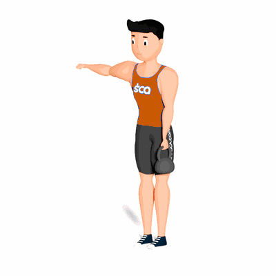

Stiff Unilateral com Kettlebell

O exercício tem como objetivo o fortalecimento dos músculos do glúteo e posteriores da coxa. O movimento exige que o praticante já esteja em um nível avançado, pois demanda coordenação e força de diversos músculos.
Ficha Técnica
Tipo: Musculação
Grupo Muscular: Glúteo
Aparelho: Nenhum
Músculos: Nenhum
Como realizar
- Na posição em pé, joelhos ligeiramente flexionados;
- Segure com uma das mãos o Kettlebell na mesma distância do ombro;
- Posicione o Kettlebell na altura da coxa, cotovelo estendido, a coluna deverá se manter reta em toda a execução do exercício;
- Manter a perna oposta ao Kettlebell apoiado no solo, eleve a outra realizando simultaneamente a flexão do quadril inclinando o tronco para a frente;
- Retorne à posição inicial e ao terminar as repetições troque o Kettlebell de mão e repita os movimentos.
 RC STORE
RC STORE